+++
title = "Yapım Tasarımı: Filmlerin Görsel Dili"
seotitle="Yapım Tasarımı: Filmlerin Görsel Dilinde Tasarımcı"
description="Yapım tasarımcısı kimdir? Yapım tasarımcısı, setler için fikirler bulur ve bazı çizimler ve eskizler yapar. Filmlerin görsel dilini yapım tasarımı oluşturur."
url="sayi-10/yapim-tasarimi-filmlerin-gorsel-dili"
aciklama="Yapım tasarımcısı, setler için fikirler bulur ve bazı çizimler ve eskizler yapar. Yönetmenin bazı fikirleri olacağından, bizim durumumuzda George Lucas idi, kendisinin çalıştığı insanlar da birkaç eskizle çıkageldi. Setlerin nihai uygulaması yapım tasarımcısının sorumluluğundadır."
type="sayfa"
thumb="/img/yapim-tasarimi-thumbnail.jpg"
date = "2021-06-04"
sayi=["10"]
sayfa="01"
yazar=["hilal doruk"]
tags= ["ana sayfa", "dergi"]
+++

<div class="container">
   <h2 id="yapım-tasarımcısı-kimdir">Yapım Tasarımcısı Kimdir?</h2>
   <div class="row">
      <div class="col-md-6">
         <p>
            Filmlerin, dizilerin ve tiyatroların görsel dilini oluşturan;
            kostümden makyaja, mekan tasarımından ürün tasarımına kadar görsel
            her olguya karar veren kişidir.
         </p>
         <p>
            Senaryoyu okuduktan sonra belirlediği konsept doğrultusunda diğer
            birimler (sanat departmanı, görüntü yönetmeni, yönetmen, prodüktör)
            ile beraber setler, mekanlar, grafikler, aksesuarlar (prop),
            ışıklar, kamera açıları ve kostümler üzerinde çalışırlar.
            Prodüksiyon tasarımcıları filmlerde, tiyatrolarda ve dizilerde
            uzmanlaşma eğilimindedirler. Tiyatroda prodüksiyon tasarımına aynı
            zamanda set/sahne tasarımcısı da denir.
         </p>
         <p>
            Prodüksiyon tasarımcısı, konsept tasarımcısıyla birlikte de
            çalışabilir veya konsept tasarımları, çizimleri kendisi de
            yapabilir. Aksesuarları, ürünleri, kendisi tasarlayabilir, özel
            olarak tasarlatabilir veya var olan tasarımları kullanabilir.
            Kısacası belirlenen konsept için gerekli olan adımları belirlemekle
            ve o adımları atmakla sorumludur.
         </p>
         <b>Sanat Departmanı&#39;nda:</b>
         <ul>
            <li>Sanat Yönetmeni,</li>
            <li>Sahne Tasarımcısı,</li>
            <li>Sahne dekoratörü,</li>
            <li>Kostüm tasarımcısı,</li>
            <li>Aksesuar sorumlusu,</li>
            <li>Konstrüksiyon koordinatörü,</li>
            <li>Konsept tasarımcı (illüstratör),</li>
            <li>Grafik tasarımcı,</li>
            <li>Maket yapımcısı, yer alır.</li>
         </ul>
      </div>
      <div class="col-md-6">
         {{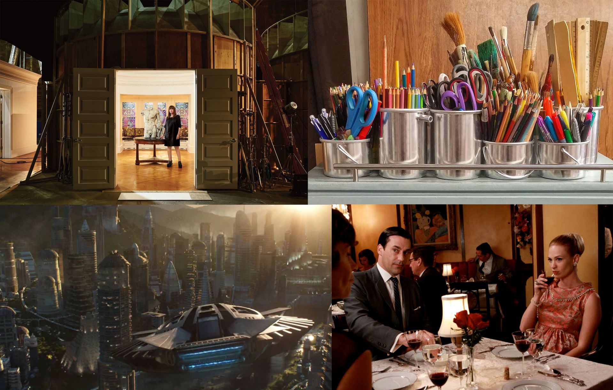}}
         <small>
            Yapım tasarımcısı kararlarını yapımın bütçesine, tarihi dönemine,
            hikayesine vs. göre almalıdır.
         </small>

         <blockquote>
            <p>
               "Yapım tasarımcısı, setler için fikirler bulur ve bazı
                çizimler ve eskizler yapar. Yönetmenin bazı fikirleri olacağından,
               bizim durumumuzda George Lucas idi, kendisinin çalıştığı insanlar
               da birkaç eskizle çıkageldi. Setlerin nihai uygulaması yapım tasarımcısının
               sorumluluğundadır. Sanat yönetmeni... tasarımların yürütülmesine
               yardımcı olur çünkü bazen tasarımcının çeşitli yerleri görmek için
               seyahat etmesi gerekir. Bir Sanat Yönetmeni temelde yapım tasarımcısının sağ koludur.” -
               Norman Reynolds, Yıldız Savaşları IV sanat yönetmeni, Yıldız
               Savaşları V yapım tasarımcısı.
            </p>
         </blockquote>
         <p>
            Popüler filmlerde ve dizilerde prodüksiyon tasarımcılarının ve sanat
            departmanının tasarım sürecine ve görsel dili tamamlamak için
            kullanılan ürün tasarımlarına bir göz atalım. 👁️‍🗨️
         </p>
      </div>
   </div>

   <h3>
      <ol start="1">
         <li>2001: Bir Uzay Destanı - Stanley Kubrick</li>
      </ol>
   </h3>
   <div class="row">
      <div class="col-md-6">
         <p>
            Arthur C. Clarke&#39;ın &quot;Gözcü&quot; adlı kısa öyküsünü
            okuduktan sonra Kubrick, gerçekten iyi bir bilim-kurgu filmi çekmek
            istediğini Clarke&#39;a yazarken ilgisi olan konuları da belirtiyor:
            Akıllı dünya dışı yaşamın varlığı, Dünya&#39;da yakın gelecekteki
            keşiflerin etkisi/etkisizliği, Ay&#39;a ve Mars&#39;a iniş yapan ve
            iki yıldızı keşfeden bir uzay sondası. İkilinin planı önce romanı
            oluşturup daha sonra bunu bir senaryoya uyarlamaktı. Kitap, filmden
            iki ay sonra yayımlandı.
         </p>
         <p>Yapım Tasarımcıları: Harry Lange, Anthony Masters, Ernest Archer</p>
      </div>
      <div class="col-md-6">
         {{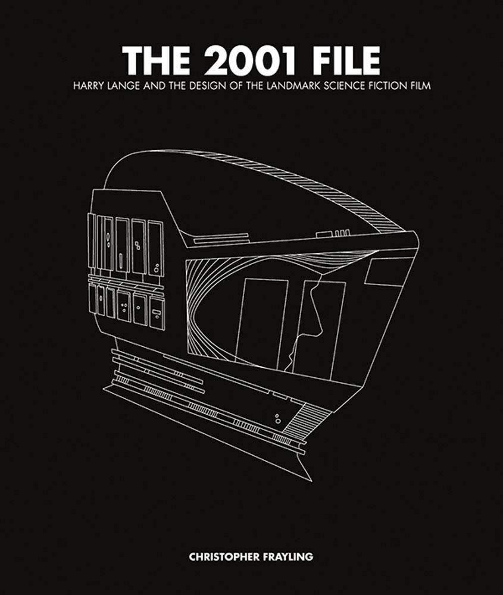}}
         <small
            >Harry Lange&#39;in 2001 için çizdiği eskizlerin derlendiği
            kitap.</small
         >
      </div>
   </div>
   <div class="row">
      <div class="col-md-6">
         {{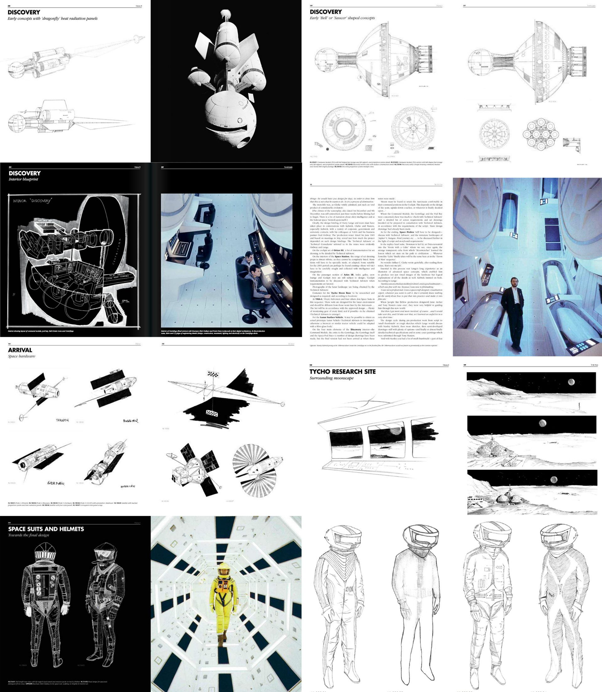}}
         <small>
            Harry Lange&#39; in film için çalıştığı konsept eskizlerden birkaçı. </small
         ><br ><br >
      </div>
      <div class="col-md-6">
         {{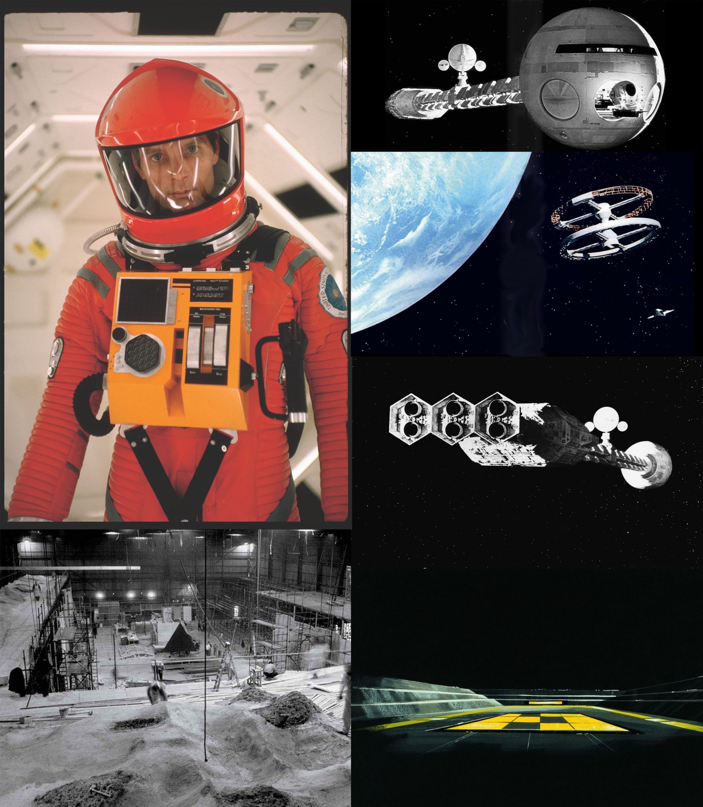}}
         <small
            >Eskizler sonucunda kararlaştırılan tasarımlardan birkaçı.</small
         >
      </div>
   </div>

   <div class="row">
      <div class="col-md-6">
         {{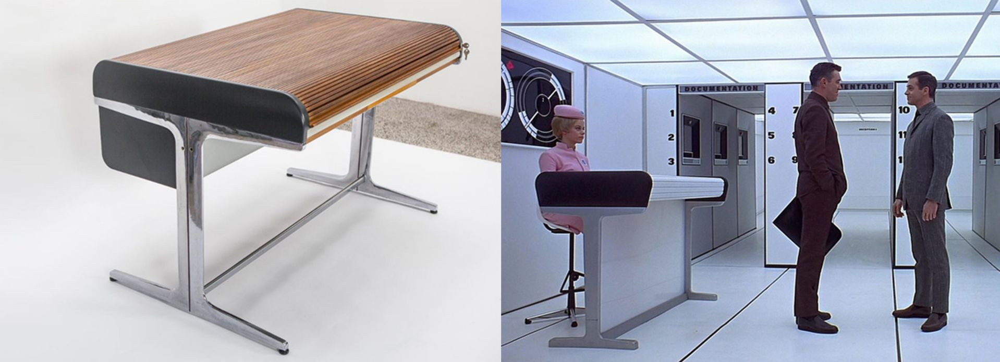}}
         <small>
            Action Ofis Masası - George Nelson, Herman Miller için (1964): Ceviz
            ağacından ve krom çelikten mobilya üreticisi H. Miller tarafından
            üretildi. </small
         ><br ><br >
      </div>
      <div class="col-md-6">
         {{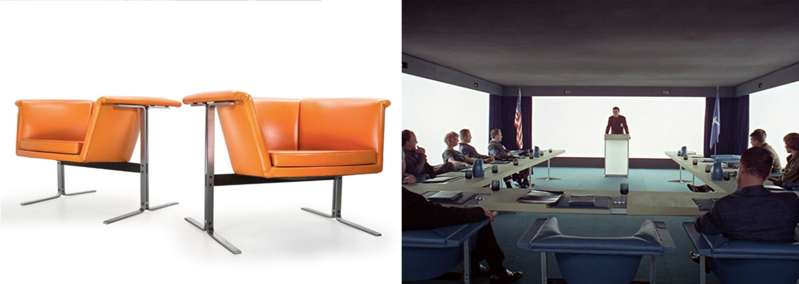}}
         <small>
            Model 042 Lounge Sandalye - Geoffrey Harcourt, Artifort için (1963):
            Modern, çelik çerçeve ayaklı sandalye konferans odasında kullanıldı.
         </small>
      </div>
   </div>

   <div class="row">
      <div class="col-md-6">
         {{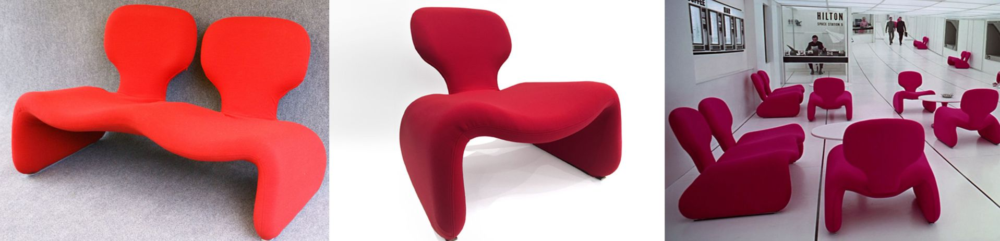}}
         <small>
            Djinn Sandalye ve Koltuk - Olivier Mourgue, Airborne için (1965):
            Altmışların fütüristik anlayışını yansıtan bu ikonik sandalye ve
            koltuk filmde Uzay İstasyonu 5&#39;in lobisinde kullanıldı. </small
         ><br ><br >
      </div>
      <div class="col-md-6">
         {{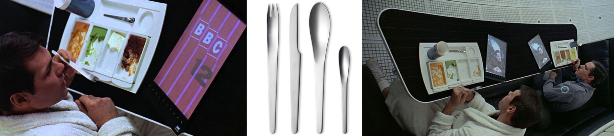}}
         <small>
            Jacobsen Çatal Bıçak Takımı - Arne Jacobsen, Georg Jensen için
            (1958): Bu fütüristik ve yalın çatal-bıçak takımı filmden on yıl
            önce tasarlandı ve filmde Jüpiter Görevi&#39;ndeki mürettebat
            tarafından kullanıldı.
         </small>
      </div>
   </div>
   <hr >
   <h3>
      <ol start="2">
         <li>Uzay Yolu</li>
      </ol>
   </h3>
   <p>
      Uzay Yolu altmışlarda ırkçılığın dur durak bilmediği ve uzay çağı
      söylemlerinin bol olduğu bir dönemde yalnızca fütüristik görünümüyle değil
      aynı zamanda insan eşitlikçi bir tavır almasıyla da, oyuncuların birçok
      farklı ırktan olması ve devamlı rollerden birinde Afrikan-Amerikan bir
      kadın olması (Komutan Uhura) ile çağının ilerisindeydi.
   </p>
   <div class="row">
      <div class="col-md-6">
         {{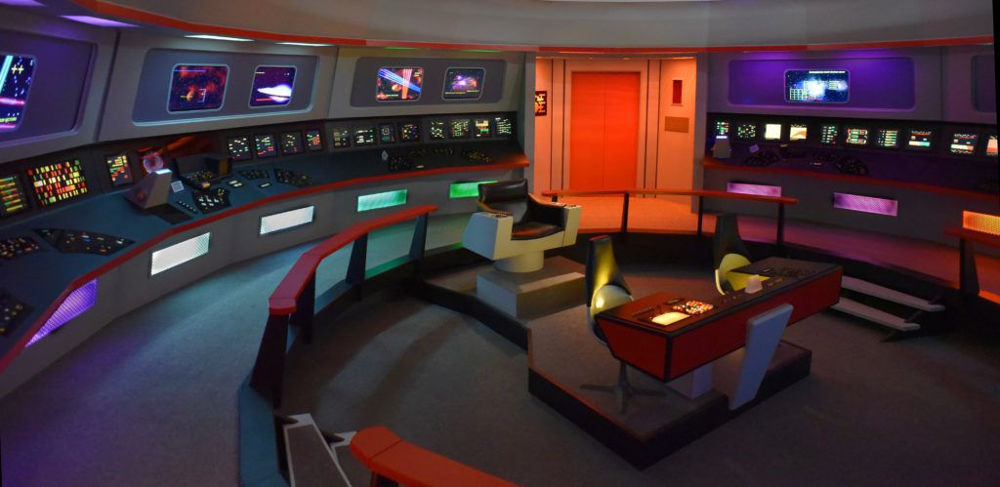}}
         <small>
            Orijinal Seri&#39;deki Atılgan köprüsü sanat yönetmeni Walter M.
            Jefferies tarafından az bütçeyle, kısıtlı zamanda 1964&#39;te (Aya
            gidişin 5 sene ardından) organizasyon, fonksiyonellik ve yalınlık
            anlayışıyla tasarladı.
         </small>
         <p>
            Orijinal Seri&#39;nin yapım tasarımcılığını yapan Walter
            Jefferies&#39;in ardından 1987-2005 yılları arasında, Uzay Yolu
            evreninde üç dizinin ve altı filmin baş yapım tasarımcısı Herman
            Zimmerman idi. Uzay Yolu külliyatının görsel dilinin tutarlı ve
            sağlam olabilmesi için başka tasarımcılarla/illüstratörlerle Atılgan
            modelleri, uzay üsleri, Atılgan köprüsü ve mühendisliği üzerinde
            çalıştı.
         </p>
      </div>
      <div class="col-md-6">
         {{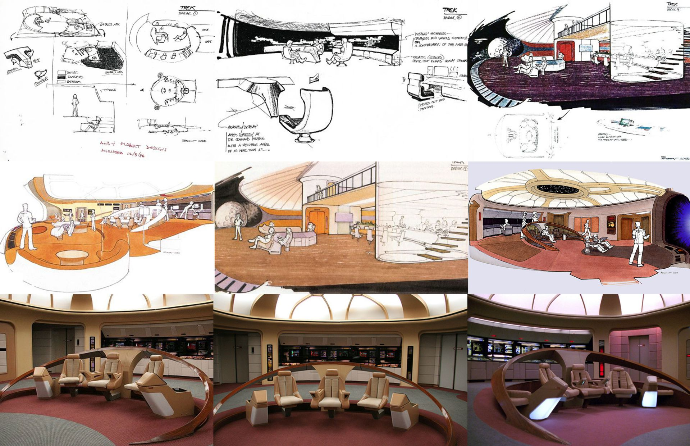}}
         <small>
            Andrew Probert, 1978&#39;de Roddenberry tarafından işe alındı.
            Orijinal Seri&#39;den sonra Uzay Yolu: Yeni Nesil (TNG) için her şey
            yeniden düşünülmeli, planlanmalı ve yeniden tasarlanmalıydı.
            Atılgan-D&#39;nin ana köprüsü dahil olmak üzere iç mekanlar Uzay
            Yolu evreninde gelişen teknolojiyi yansıtabilmesi adına yeniden
            tasarlandı.
         </small>
      </div>
   </div>

   <div class="row">
      <div class="col-md-6">
         {{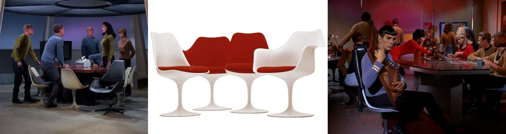}}
         <small>
            Tulip Sandalye, Eero Saarinen tasarımı, Knoll için (1957): Lale
            bitkisini taklit eder; geleneksel sandalyenin ayaklarını tek bir
            gövdeyle desteklemeye indirgeyerek lale yaprağının silüetinden
            faydalanır. Döner tabanlı versiyonu ve koltuk modeli de
            bulunmaktadır. </small
         ><br ><br >
      </div>
      <div class="col-md-6">
         {{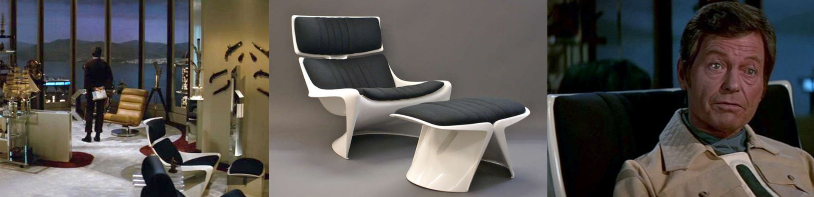}}
         <small>
            President Lounge Sandalye 265, Steen Ostergaard tasarımı, CADO için
            (1968): 1960&#39;larda uzay çağı tasarımcılarından Ostergaard
            tasarımı sandalye hem iç mekanda hem de dış mekanda
            kullanılabiliyor. Bu sandalye aynı zamanda Houston Texas&#39;taki
            roket üssünde kullanılıp roketler fırlatıldığında hareket etmemesi
            için zemine kalıplanmıştır.
         </small>
      </div>
   </div>

   <hr >
   <h3>
      <ol start="3">
         <li>Yıldız Savaşları</li>
      </ol>
   </h3>
   <div class="row">
      <div class="col-md-6">
         <p>
            George Lucas&#39;ın, Kurosawa&#39;nın <em>Gizli Kale</em> (Hidden
            Fortress) filminden esinlenerek yarattığı bilim-kurgunun alt türü
            uzay operası filmi gerek John Williams&#39;ın müzikleriyle gerekse
            karakterleri, uzay gemileri, araçları, droidleri ile akılda kalıcı.
         </p>
         <p>
            Yıldız Savaşları&#39;na kadar bilim-kurgu filmleri hep el değmemiş,
            &quot;parlak&quot;tı. Yıldız Savaşları&#39;nda ise parlak
            İmparatorluk&#39;a karşı asilerin ve sivillerin araçları, droidleri
            ve kendileri paslı, tozlu, zarar görmüştü. George Lucas
            &quot;geçmişi olan bir gelecek&quot; istiyordu.
         </p>
         <p>
            Serinin ilk filmi Yıldız Savaşları IV: Yeni Bir Umut (A New
            Hope)&#39;un yapım tasarımcısı John Barry ve sanat yönetmenleri
            Norman Reynolds ile Leslie Dilley idi. İkinci filmi V: İmparator
            (The Empire Strikes Back)&#39;un ve üçüncü film VI: Jedi&#39;ın
            Dönüşü (Return of The Jedi)&#39;nün yapım tasarımcısı görevini
            Norman Reynolds üstlendi.
         </p>
         <p>
            Mimarlık mezunu John Barry Otomatik Portakal (Clockwork Orange),
            Superman gibi filmlerin de yapım tasarımcısıdır. Mimarlık mezunu
            Leslie Dilley ise Kutsal Hazine Avcıları (Raiders of the Lost Ark)
            ve Yaratık (Alien) gibi filmlerin de sanat yönetmenidir.
         </p>
         <p>
            Kısıtlı bütçeden dolayı mümkün olduğu kadar hazır ürünler
            kullanıldlı. 2.Dünya Savaşı&#39;ndan kalma hurda Rolls-Royce
            uçakları (bir uçak 50 pound civarı idi) ve motorları setin
            çoğunluğunda kullanıldı.
         </p>
         <p>
            Yapım tasarımcısı John Barry röportajda “Binlerce pound değerinde
            uçak hurdası aldık ve parçalara ayırdık. Bu çok karmaşık yontulmuş
            formları yapmak için yapılması gereken çizimin karmaşıklığını hayal
            edebilirsiniz. Ancak bir jet motorunu parçalara ayırdığınızda harika
            şeyler elde edersiniz.”
         </p>
      </div>
      <div class="col-md-6">
         {{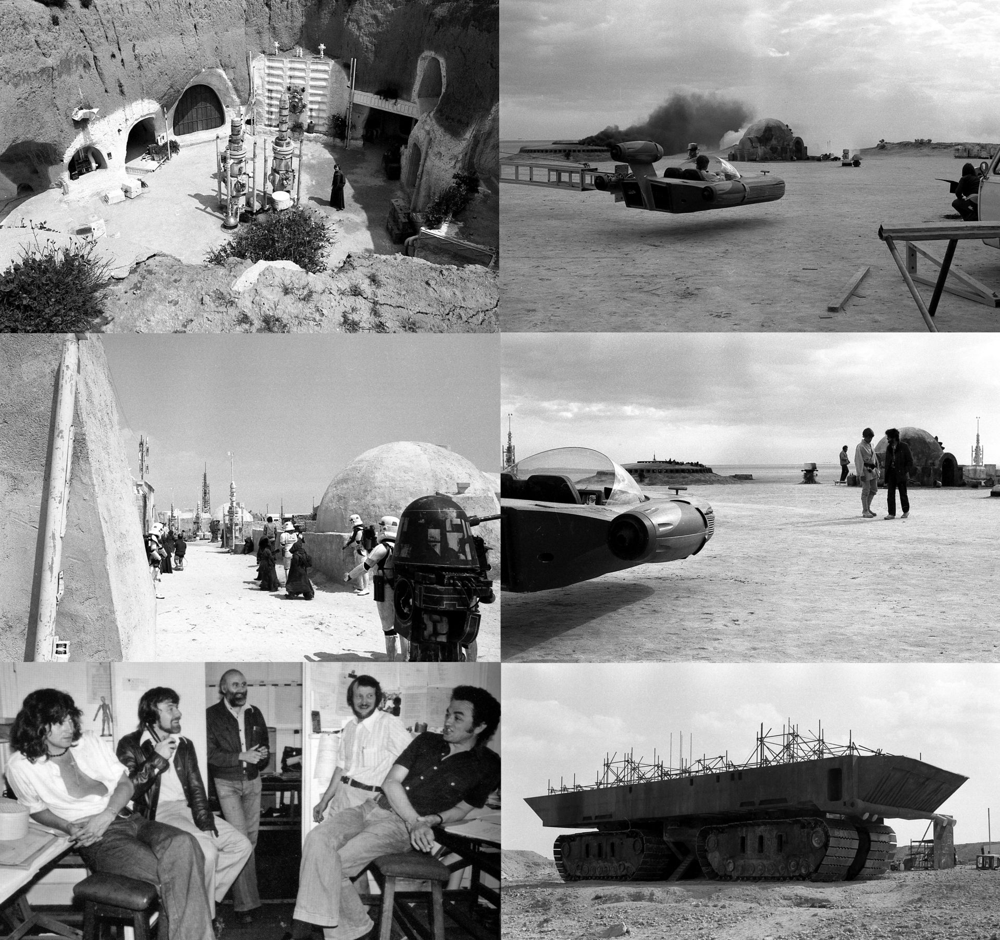}}
         <small>
            Beşinci fotoğraf: Tasarım ekibi, 1976. Soldan Sağa: Roger Christian,
            Leslie Dilley, John Barry, Bill Welch, Norman Reynolds. </small
         ><br ><br >
          {{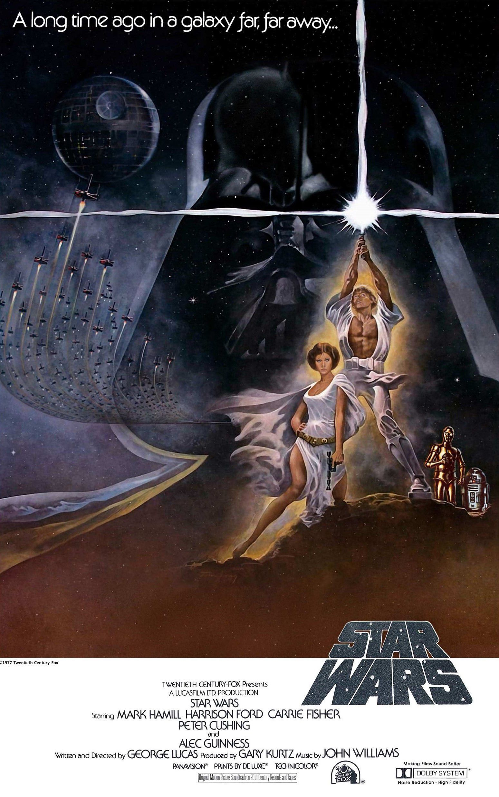}}
      </div>
   </div>
   <div class="row">
      <div class="col-md-6">
         {{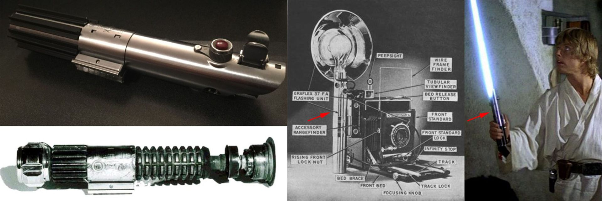}}
         <small>
            Işın kılıçları üzerine: “Birkaç Graflex fotoğraf makinesinin flaş
            tabancası (flashgun) tutacağı buldum. Mükemmellerdi, ağırlardı ve
            flaşı ateşlemek için kırmızı bir düğmesi vardı. Ofisimde süper
            yapıştırıcıyla oturdum, sapın çevresine bir T-şerit yapıştırdım,
            ucuna bir D-halkası koydum ve bir hesap makinesinin parçalarını
            yapıştırdım. Ağırdı ve güzel görünüyordu. Sanırım yaklaşık 8
            sterline yaptım.&quot; -Roger Christian </small
         ><br >
         <br >
         {{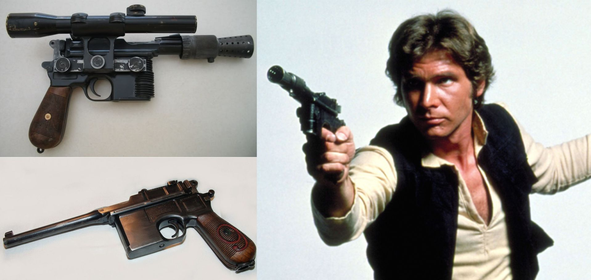}}
         <small>
            George Lucas bir röportajda: &quot;Öne çıkmayan sahne
            dekorları/aksesuarlar yapmaya çalışıyorum. Her şeyi doğal, günlük,
            neredeyse &#39;Bunu daha önce gördüm&#39; dedirtecek şekilde yapmaya
            çalışıyorum.&quot; dedi. Bunun üzerine Roger Christian gerçek
            silahları modifiye etmeyi önerdi; çünkü kullanılmış ve doğal
            durabileceklerinin yanı sıra bütçe dostuydu. </small
         ><br ><br >
      </div>
      <div class="col-md-6">
         {{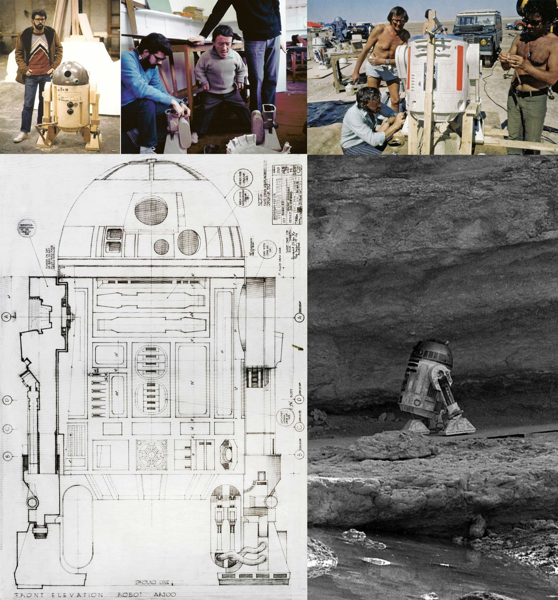}}
         <small>
            R2-D2 için Ralph McQuarrie ve Norman Reynolds&#39;ın tasarımları
            doğrultusunda üretimiyle Roger Christian ilgilendi. Eline geçen
            herhangi bir planı gerçeğe dönüştürmeyi başarabilen, Monty Phython
            için aksesuarlar üretmiş marangoz Bill Harman ile anlaştılar.
            Kontrplak ve 1940&#39;lardan bir lambanın tepesiyle üretildi. C-3PO
            ise bu kadar şanslı değildi... Liz Moore ile Brian Muir tarafından
            yapıldı. Eli çekimden bir gece önce tamamlanabildi.
         </small>
      </div>
   </div>

   <div class="row">
      <div class="col-md-6">
         {{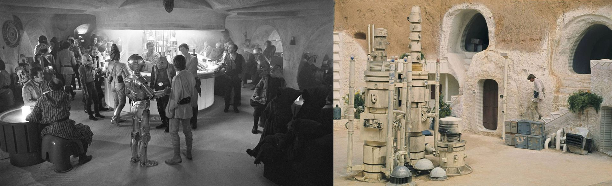}}
         <small>
            Ralph McQuarrie ile çalışan Barry, detaylı fütüristik görünümlü
            binalar yerine fonksiyonel ve dikkat çeken mimari yapılar ile gerçek
            mekanlar yarattı. Tattooine&#39;deki yapılar, Tunus örnek alınarak
            oluşturuldu. Üstelik Luke&#39;un evi aslen Tunus&#39;ta bir otel. </small
         ><br ><br >
      </div>
      <div class="col-md-6">
         {{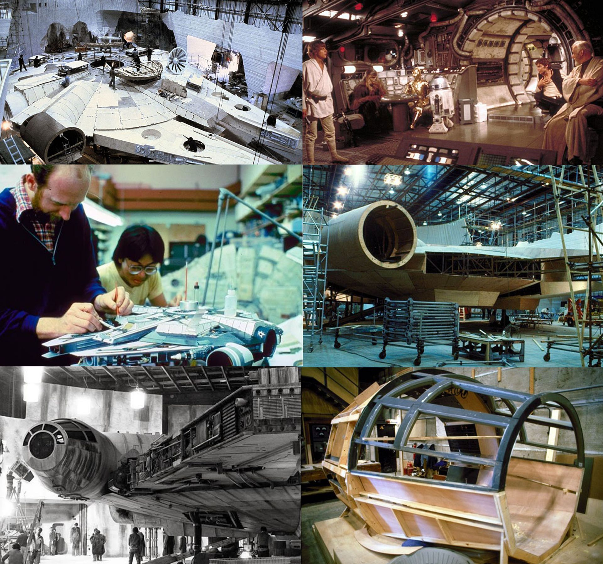}}
         <small>
            Millennium Falcon, duvarlar, borular, parçalar ve hurda
            yığınlarından yapılması gemiye işlevsel ve kullanılmış görüntüsü
            kazandırdı.
         </small>
      </div>
   </div>
   <div class="row">
      <div class="col-md-6">
         {{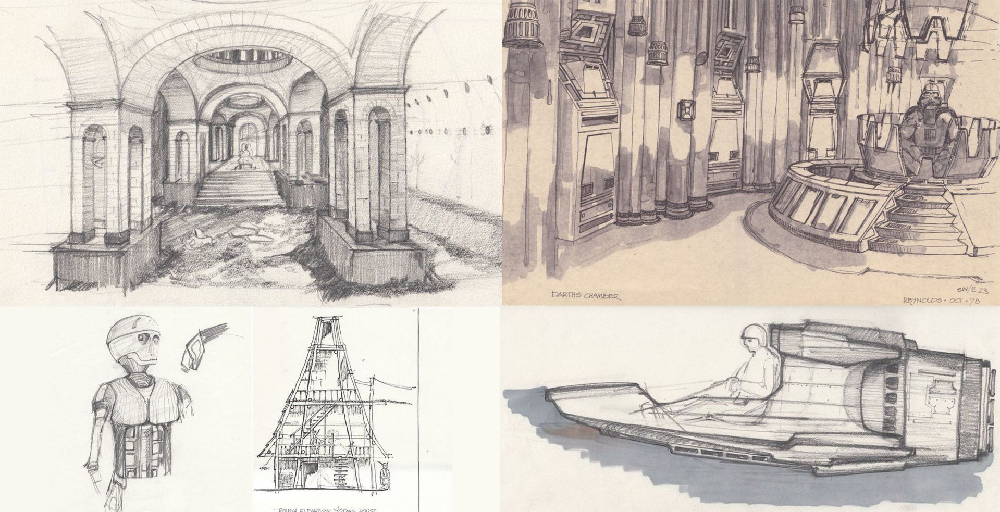}}
         <small>
            Norman Reynolds&#39;ın eskizleri. Üstte soldan sağa:
            İmparator&#39;un tahtı eskizlerinden (Jedi&#39;ın Dönüşü), Darth
            Vader&#39;ın Meditasyon Odası (İmparator). Meditasyon Odaları güç
            hassasiyeti olan varlıkların derin düşüncelere dalmasını sağlayan
            odalardır. </small
         ><br ><br >
      </div>
      <div class="col-md-6">
         {{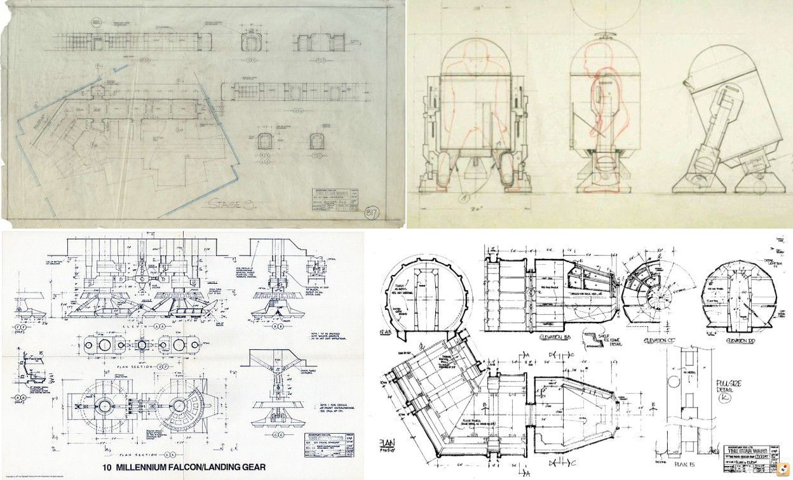}}
         <small>
            Sol üstten saat yönünde: Blockade runner corridor, R2-S2, Millennium
            Falcon kokpit ve iniş aracı.
         </small>
      </div>
   </div>

   <hr >
   <h3>
      <ol start="4">
         <li>Geleceğe Dönüş</li>
      </ol>
   </h3>
   <div class="row mb-1">
      <div class="col-md-6">
         <p>
            Robert Zemeckis&#39;in yönettiği filmin yapım tasarımcısı Lawrence
            G. Paull mimarlık mezunu, birçok aksiyon, fantastik ve bilim-kurgu
            filmlerinin arkasındaki yaratıcı isimdir. Geleceğe Dönüş&#39;ün yanı
            sıra Bıçak Sırtı&#39;nın da yapım tasarımcısıdır.
         </p>
         <p>
            Geleceğe Dönüş&#39;ün zaman yolculuğu temasını ve 1950ler - 1980ler
            - yakın gelecek zaman üçlüsünün görüntüsünü yansıtmak için kurduğu
            sanat departmanında büyük isimler yer almaktadır. Filmin ana unsuru
            olan DeLorean arabanın tasarım sürecini Andrew Probert&#39;ün
            illüstrasyonları ve zaman makinesinin bütçe sıkıntısından dolayı
            Mercedes Benz 300SL yerine DeLorean arabada olması kararının
            ardından Ron Cobb sürdürmüştür. İyi bir araç olduğu düşünülmeyen
            DeLorean araba neyse ki paslanmaz çelik gövdesiyle fütüristik
            tasarımıyla film için uygundu, tabi yine de içinde bir zaman
            makinesi olduğunu belli etmemesi gerekiyordu.
         </p>
         <blockquote>
            <p>
               “Cobb ayrıldığında, yapımcılar Ron&#39;un bir araya getirdiği
               şeylerin çoğunu beğendiler, ancak tasarımın tamamlanmış olduğunu
               düşünmediler. Eskizlerimi gözden geçirdiler ve Steven
               (Spielberg), Ron&#39;un fikirlerini temel alarak sürece devam
               etmemi önerdi.&quot; -Andrew Probert.
            </p>
         </blockquote>
      </div>
      <div class="col-md-6">
         {{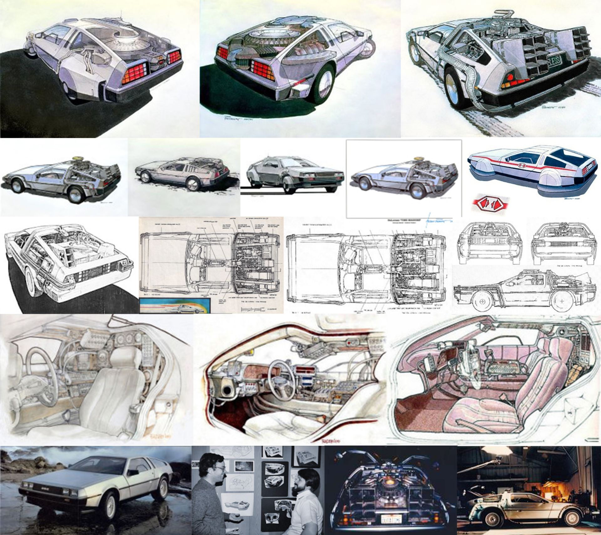}}
         <small>
            DeLorean için Probert&#39;ün illüstrasyonları ve Ron Cobb&#39;un
            eskizleri.
         </small>
      </div>
   </div>
   <div class="row">
      <div class="col-md-6">
         <blockquote>
            <p>
               &quot;...Cobb&#39;un zihninin filme bir diğer önemli katkısı,
               zaman yolculuğunun gerçek biçimiydi. Konsepti, arabayı bağlı
               bobinler tarafından oluşturulan manyetik alanla çevrelemek, onu
               uzay ve zamanın dışında bir yere göndermek ve şoförün istediği
               herhangi bir zaman geri getirmekti. (Zaman makinesi çalıştığında)
               Arabadaki buzlanmanın “Tanrım neredeler?” ürkütücülüğünü
               artıracağını düşündü.&quot; -Andrew Probert.
            </p>
         </blockquote>
      </div>
      <div class="col-md-6 mt-md-4">
         <p>
            Çekimlerde kullanılması üzerine üç farklı DeLorean üretilmesi için
            Universal Stüdyoları, Filmtrix şirketi ile anlaştı: bütün
            fonksiyonel elektrik devrelerini barındıran ve en çok kullanılan;
            özel efekt çekimlerinde ve dublör olarak kullanılan; yalnızca aracın
            içinde yapılacak çekimler için sadece içinin dekore edildiği üç
            araç.
         </p>
      </div>
   </div>
   <h4>Marty McFly&#39;ın İkonik Ayakkabısı</h4>
   <div class="row">
      <div class="col-md-7">
         <p>
            Robert Zemeckis&#39;in fütüristik bir ayakkabı tasarımı istemesi
            üzerine, Geleceğe Dönüş 2 filminde kullanılan Tinker Hatfield ve
            Tiffany Beers tasarımı kendi kendine bağlanan ayakkabı &quot;Power
            Laces&quot; yalnızca 30 saniye gözükmesine rağmen etkisi uzun sürdü.
            Filmden 25 sene sonra ise Beers ve ekibi ile gerçeğe dönüştürüldü.
         </p>
         <p>
            Filmde kullanılan model gerçekte bu kadar iyi çalışmıyordu tabi.
            Aydınlatma için büyük bir batarya takıldı ve bağcıklar adeta manuel
            olarak çekildi.
         </p>
      </div>
      <div class="col-md-5">
        
      </div>
   </div>

   {{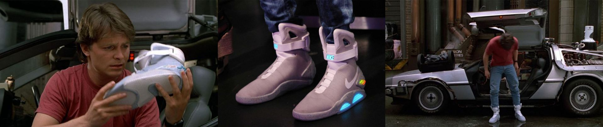}}

   <hr >
   <h3>
      <ol start="5">
         <li>Bıçak Sırtı - Ridley Scott</li>
      </ol>
   </h3>
   <div class="row">
      <div class="col-md-6">
         <p>
            Philip K. Dick&#39;in &quot;Androidler Elektrikli Koyun Düşler
            Mi?&quot; kitabından uyarlanan, yapım tasarımcısı ve sanat yönetmeni
            Lawrence G. Paull olan film Bıçak Sırtı, 1982 yılında en iyi sanat
            yönetimi dalında Oscar adayı ve en iyi yapım tasarımı dalında BAFTA
            adayı oldu.
         </p>
         <p>
            Endüstriyel duman ve asit yağmurları içindeki gökdelenler ve
            insanlara hizmet etmesi için üretilen replikantlarıyla distopik 2019
            Los Angeles&#39;ının tasviri
            <em>hem görkemli hem de tedirgin edici.</em> Bu vizyon Ridley
            Scott&#39;ın Edward Hopper imzalı &quot;Nighthawks - Gece Kuşları
            resminden ve çizgi roman dergisi Heavy Metal&#39;dan esinlenmesiyle
            oluştu. Endüstriyel ve konsept tasarımcı Syd Mead de film için bu
            dergiden feyz aldı.
         </p>
         <p>
            Filmin mimarisi fütürist İtalyan mimar Antonio Sant&#39;Elia&#39;nın
            işlerinden etkilendi. Aynı zamanda
            <em>Fritz Lang&#39;in Metropolis</em> filmiyle de mimari tasarım
            paralellikleri mevcut. Bıçak Sırtı&#39;nda, insanlar ve hizmetkar
            replikantlar arasındaki, <em>sınıf çatışması</em> Metropolis
            filminde de odak noktası.
         </p>
      </div>
      <div class="col-md-6">
         {{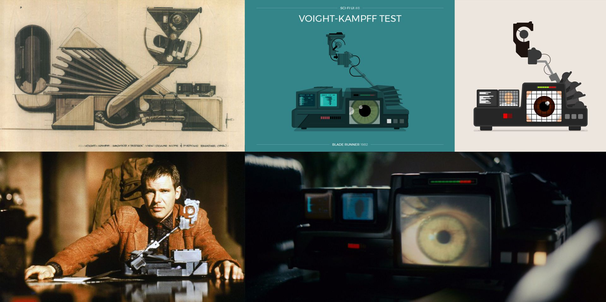}}
         <small>
            Konsept Tasarımlarını yine Syd Mead&#39;in yaptığı bireylerin
            android mi yoksa insan mı olduklarını ölçen makine Voight-Kampff,
            Alan Turing&#39;in makiensi ile benzerlik gösteriyor. Kitapta
            Voigt-Kampff olarak adı geçiyor.
            <br >
            Soldan sağa illüstrasyonlar: Syd Mead, Daniel Brown, Enrique Pérez.
         </small>
      </div>
   </div>
   <div class="row">
      <div class="col-md-6">
         {{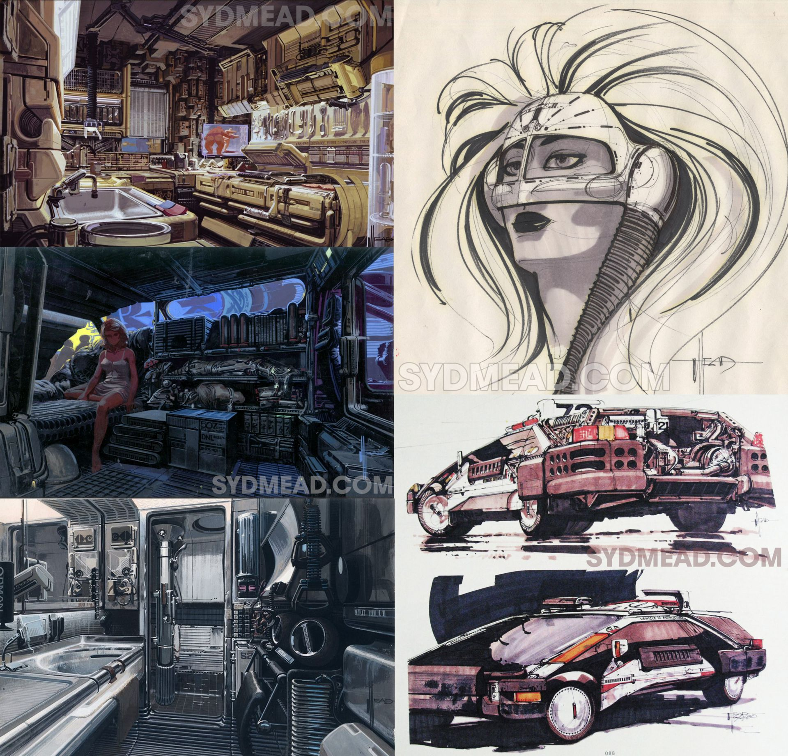}}
         <small>
            Endüstriyel ve Konsept Tasarımcı Syd Mead&#39;in Bıçak Sırtı için
            çizdiklerinden birkaçı. Syd Mead, Aliens ve Tron gibi bilim-kurgu
            filmlerinin de konsept tasarımcılığını yapmıştır. Araç
            tasarımlarıyla bilinir ve görsel fütürist olarak tanımlanır. </small
         ><br ><br >
      </div>
      <div class="col-md-6">
         {{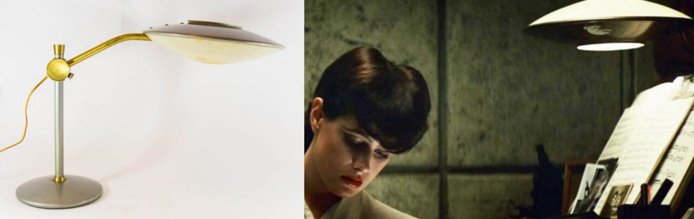}}
         <small>
            Dazor UFO Lamba, Gerald Thurston (1940lar): Filmin Future Noir
            havasını yansıtabilmek için Deckard&#39;ın evinde çok az tavan
            aydınlatması kullanıldı veya hiç kullanılmadı. Sadece bu kitsch
            lamba birkaç kez kullanılarak karanlık bir ortam elde edildi. Aynı
            zamanda Mad Men dizisinde de sıkça kullanıldı. </small
         ><br >
         <br >
         {{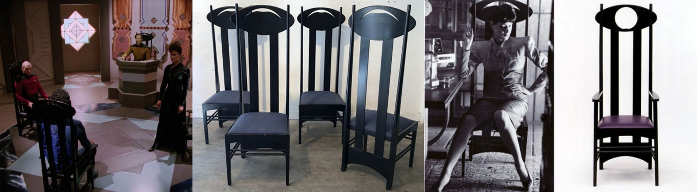}}

         <small>
            Argyle Sandalye, Charles Rennie Mackintosh, Glasgow&#39;daki Arglye
            Sokak&#39;ın Çay Odaları için (1897): Charles Rennie
            Mackintosh&#39;un en bilindik tasarımlarından meşe Argyle Sandalye
            Blade Runner filminde, Star Trek: TNG dizisinde, Dr. Who dizisinde
            kullanıldı.
         </small>
      </div>
   </div>

   <div class="row">
      <div class="col-md-6 offset-md-3 text-center">
         <blockquote>
            <b>
               &quot;Tüm o anlar zaman içinde kaybolacak, yağmurdaki gözyaşları
               gibi.&quot;
            </b>
         </blockquote>
      </div>
   </div>

   <button
      class="btn markutbtn"
      data-target="#my-collapse"
      data-toggle="collapse"
      aria-expanded="false"
      aria-controls="my-collapse"
   >
      Kaynaklar
   </button>
   <div id="my-collapse" class="collapse">
      <pre> <small><code>  
         https://www.prospects.ac.uk/job-profiles/production-designer-theatre-television-film

         https://www.zacuto.com/what-is-art-direction#:~:text=If a Production Designer oversees,of the nitty gritty bits.
         
         https://study.com/articles/production_designer_job_description_duties_salary.html
         
         https://www.nyfa.edu/student-resources/what-does-a-production-designer-do/
         
         https://www.screenskills.com/careers/job-profiles/film-and-tv-drama/craft/production-designer/
         
         https://www.junglesoftware.com/great_articles/What-does-a-Production-Designer-Do.php
         
         https://www.nytimes.com/2017/09/13/t-magazine/entertainment/production-designers-film-movies.html
         
         https://www.cbc.ca/arts/welcome-to-wakanda-how-black-panther-s-production-designer-created-a-world-never-seen-on-film-1.4526309
         
         https://www.dezeen.com/2019/02/23/oscars-academy-awards-production-design/
         
         https://www.nfi.edu/production-design/
         
         
         
         
         
         2001
         
         https://filmandfurniture.com/product/action-office-desk-by-george-nelson-for-herman-miller-1964/
         
         https://filmandfurniture.com/product/djinn-chair-olivier-morgue-2001-space-odyssey/
         
         https://filmandfurniture.com/product/djinn-sofa-by-olivier-mourgue/
         
         https://filmandfurniture.com/product/jacobsen-cutlery-seen-2001-space-odyssey/
         
         https://filmandfurniture.com/product/model-042-lounge-chairs-by-geoffrey-harcourt-for-artifort-set-of-2-vintage/
         
         https://www.openculture.com/2015/07/difference-between-stanley-kubricks-arthur-c-clarkes-2001-a-space-odyssey.html
         
         https://en.wikipedia.org/wiki/Harry_Lange_(film_designer)
         
         https://www.amazon.co.uk/The-2001-File-Landmark-Science/dp/0957261020
         
         http://www.illustratedfiction.com/concept-art/harry-langes-designs-for-kubricks-2001-a-space-odyssey/
         
         https://en.wikipedia.org/wiki/Technologies_in_2001:_A_Space_Odyssey
         
         https://en.wikipedia.org/wiki/2001:_A_Space_Odyssey_(film)#Design
         
         
         
         
         
         Uzay Yolu
         
         https://filmandfurniture.com/2019/07/outstanding-spaceship-interiors-in-film-chosen-by-design-and-film-experts-to-mark-the-moon-landing-anniversary/
         
         https://filmandfurniture.com/product/argyle-chair-by-charles-rennie-mackintosh/
         
         https://filmandfurniture.com/product/president-lounge-chair-265-by-steen-ostergaard/
         
         https://filmandfurniture.com/product/tulip-chair/
         
         https://en.wikipedia.org/wiki/List_of_Star_Trek_production_staff
         
         https://en.wikipedia.org/wiki/List_of_Star_Trek_production_staff#Other_staff
         
         https://forgottentrek.com/designing-the-next-generation-bridge/
         
         https://trekmovie.com/2018/05/23/exclusive-star-trek-set-tour-planning-next-generation-expansion-opening-film-academy-in-fall/
         
         https://trekmovie.com/2012/10/26/save-the-bridge-a-behind-the-scenes-look-at-the-project-to-restore-the-enterprise-d-bridge/
         
         https://treknews.net/2012/08/16/star-trek-fan-to-restore-original-enterprise-d-bridge-set/
         
         https://memory-alpha.fandom.com/wiki/Star_Trek:_The_Original_Series
         
         https://memory-alpha.fandom.com/wiki/Herman_Zimmerman
         
         https://en.wikipedia.org/wiki/Herman_F._Zimmerman
         
         
         
         
         
         Yıldız Savaşları
         
         http://www.lesliedilley.com/
         
         http://www.lesliedilley.com/star-wars.html
         
         https://en.wikipedia.org/wiki/Leslie_Dilley
         
         https://en.wikipedia.org/wiki/John_Barry_(set_designer)
         
         https://en.wikipedia.org/wiki/Star_Wars_(film)#Design
         
         https://starwars.fandom.com/wiki/John_Barry
         
         https://www.starwars.com/news/from-concept-to-screen-the-millennium-falcon
         
         https://blahmovies.files.wordpress.com/2010/05/millennium_falcon_interior1.jpg
         
         https://moviemaker.com/john-barry-won-an-oscar-for-star-wars-then-he-worked-on-a-disaster/
         
         https://www.bbc.com/news/uk-england-34989035
         
         http://markwestwriter.blogspot.com/2017/06/star-wars-at-40-part-6-production-design.html
         
         https://cinefex.com/blog/roger-christian-lightsabers-space-tugs/
         
         https://www.esquire.com/entertainment/movies/a28570/star-wars-roger-christian/
         
         https://www.denofgeek.com/movies/star-wars-a-new-hope-unsung-heroes/#ixzz49F15wQ9e
         
         http://starwarsmodern.blogspot.com/2012/11/thoughts-on-episode-vii-learning-from.html
         
         https://starwarsinterviews.com/star-wars-crew/gavin-bocquet-production-designer/
         
         
         
         
         
         Geleceğe Dönüş
         
         https://www.syfy.com/syfywire/set-designer-lawrence-g-paull-obituary
         
         https://productiondesign.eu/2014/02/22/back-to-the-future-1/
         
         https://en.wikipedia.org/wiki/Back_to_the_Future#Design
         
         http://www.newsfour.ie/2015/10/cinema-roundup-october-16th/
         
         https://backtothefuture.fandom.com/wiki/Nike_MAG
         
         https://www.spotern.com/en/spot/movie/back-to-the-future-part-ii/52404/the-fameusues-nike-air-mag-of-marty-mcfly-michael-j-fox-in-back-to-the-future-ii
         
         https://www.spotern.com/en/spot/movie/back-to-the-future-part-ii/55300/the-sneakers-of-the-future-nike-air-mag-marty-mcfly-michael-j-fox-in-back-to-the-future-2
         
         https://abcnews.go.com/Sports/story-nikes-lacing-back-future-inspired-shoes/story?id=43903686
         
         
         
         
         
         Bıçak Sırtı
         
         https://filmandfurniture.com/product/argyle-chair-by-charles-rennie-mackintosh/
         
         https://filmandfurniture.com/product/dazor-saucer-lamp-vintage/
         
         http://www.byaccidentordesign.com/design-blog/tears-in-rain-blade-runner-mackintosh/
         
         https://www.instagram.com/p/CM3W8-qFYjg/
         
         https://sydmead.com/project-history/
         
         https://www.imdb.com/name/nm0667223/awards?ref_=nm_ql_2
         
         https://www.theguardian.com/artanddesign/2009/nov/05/architecture-film-riba
         
         https://www.vulture.com/2017/10/why-is-blade-runner-the-title-of-blade-runner.html
         
         https://dribbble.com/shots/4244310-Sci-Fi-UI-8-Voight-Kampff-Test
         
         https://bladerunner.fandom.com/wiki/Voight-Kampff_test
         
         https://bladerunner.fandom.com/wiki/Syd_Mead
         
         https://www.theguardian.com/artanddesign/2009/nov/05/architecture-film-riba
         
         https://en.wikipedia.org/wiki/Blade_Runner#Design
         
         https://gizmodo.com/lawrence-g-paull-oscar-nominated-visionary-behind-bla-1839880954
         
         https://www.syfy.com/syfywire/set-designer-lawrence-g-paull-obituary
  </code></small></pre>
   </div>
</div>
